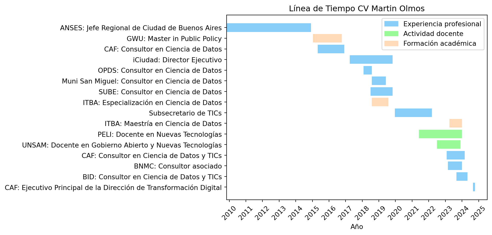

import matplotlib.pyplot as pltimport matplotlib.dates as mdatesfrom datetime import datetimeimport matplotlib.patches as mpatches# Activity datafechas = [ ("01/09/2023", "31/01/2024", "BID: Consultor en Ciencia de Datos y TICs", "Experiencia profesional"), ("01/03/2023", "31/01/2024", "BNMC: Consultor asociado", "Experiencia profesional"), ("01/02/2023", "31/01/2024", "CAF: Consultor en Ciencia de Datos y TICs", "Experiencia profesional"), ("01/07/2022", "31/01/2024", "UNSAM: Docente en Gobierno Abierto y Nuevas Tecnologías", "Actividad docente"), ("01/06/2021", "31/01/2024", "PELI: Docente en Nuevas Tecnologías", "Actividad docente"), ("01/04/2023", "31/01/2024", "ITBA: Maestría en Ciencia de Datos", "Formación académica"), ("20/12/2019", "11/03/2022", "Subsecretario de TICs", "Experiencia profesional"), ("01/08/2018", "31/07/2019", "ITBA: Especialización en Ciencia de Datos", "Formación académica"), ("01/07/2018", "01/11/2019", "SUBE: Consultor en Ciencia de Datos", "Experiencia profesional"), ("01/08/2018", "01/06/2019", "Muni San Miguel: Consultor en Ciencia de Datos", "Experiencia profesional"), ("01/02/2018", "01/08/2018", "OPDS: Consultor en Ciencia de Datos", "Experiencia profesional"), ("01/04/2017", "01/11/2019", "iCiudad: Director Ejecutivo", "Experiencia profesional"), ("01/05/2015", "01/12/2016", "CAF: Consultor en Ciencia de Datos", "Experiencia profesional"), ("14/01/2015", "10/10/2016", "GWU: Master in Public Policy", "Formación académica"), ("01/11/2009", "01/12/2014", "ANSES: Jefe Regional de Ciudad de Buenos Aires", "Experiencia profesional")]# Create a color map that maps each category to a specific colorcolor_map = {"Experiencia profesional": "lightskyblue","Actividad docente": "palegreen","Formación académica": "peachpuff"}# Transform string dates to datetime formatfechas_convertidas = [(datetime.strptime(start, "%d/%m/%Y"), datetime.strptime(end, "%d/%m/%Y")) for start, end, _, _ in fechas]# Create figure and axisfig, ax = plt.subplots()# Create a list of patches to add to the legendpatches = [mpatches.Patch(color=color, label=label) for label, color in color_map.items()]# Add the legend to the plotplt.legend(handles=patches)# Add each activity as a horizontal barfor i, (start, end, label, category) inenumerate(fechas): start_date = datetime.strptime(start, "%d/%m/%Y") end_date = datetime.strptime(end, "%d/%m/%Y") ax.barh(i, (end_date - start_date).days, left=start_date, color=color_map[category], label=label)# Format dates in the x axisax.xaxis.set_major_locator(mdates.YearLocator())ax.xaxis.set_major_formatter(mdates.DateFormatter('%Y'))# Add legends and labelsax.set_yticks(range(len(fechas)))ax.set_yticklabels([label for _, _, label, _ in fechas])plt.xlabel('Año')plt.title('Línea de Tiempo CV Martin Olmos')plt.xticks(rotation=45)# Show the plotplt.show()

Soy licenciado en Ciencias Políticas (UCA), Magister en Políticas Públicas (George Washington University), Especialista y Maestrando en Ciencia de Datos (ITBA).
FORMACIÓN ACADÉMICA
2022 MAESTRÍA EN CIENCIA DE DATOS
(Tesis en elaboración)
Instituto Tecnológico de Buenos Aires (ITBA)
2018 ESPECIALIZACIÓN EN CIENCIA DE DATOS
Instituto Tecnológico de Buenos Aires (ITBA)
2016 MASTER IN PUBLIC POLICY
Trachtenberg School of Public Policy and Public Administration
George Washington University
2003 LICENCIATURA EN CIENCIAS POLÍTICAS, CON ORIENTACIÓN EN PROCESOS POLÍTICOS
Facultad de Ciencias Políticas y Relaciones Internacionales. Pontificia Universidad Católica Argentina. Buenos Aires, Argentina.
ANTECEDENTES PROFESIONALES Y DOCENTES
9/2023- actualidad BANCO INTERAMERICANO DE DESARROLLO Responsabilidad: Consultor en Ciencia de Datos y TICs
2/2023- actualidad CAF BANCO DE DESARROLLO DE AMÉRICA LATINA Y EL CARIBE Responsabilidad: Consultor en Ciencia de Datos y TICs
7/2022- actualidad DIPLOMATURA EN GESTIÓN DE CIUDADES - ESCUELA DE ECONOMÍA Y NEGOCIOS – UNIVERSIDAD NACIONAL DE SAN MARTÍN
Responsabilidad: Docente en Gobierno Abierto y Nuevas Tecnologías
12/2019-03/2022 SUBSECRETARIO DE TECNOLOGÍAS DE LA INFORMACIÓN Y LAS
COMUNICACIONES DE LA JEFATURA DE MINISTROS DE LA NACIÓN
6/2021-9/2021 PROGRAMA EJECUTIVO EN LIDERAZGO INNOVADOR – OEI, ILES, SECRETARÍA DE ASUNTOS ESTRATÉGICOS DE LA REPÚBLICA ARGENTINA
Responsabilidad: Docente en Nuevas Tecnologías
4/2017-11/2019 INSTITUTO CIUDAD – POLÍTICAS PÚBLICAS PARA BUENOS AIRES
Responsabilidad: Director Ejecutivo
8/2019-12/2019 SEMINARIO DE INTRODUCCIÓN A LA CIENCIA DE DATOS PARA LAS CIENCIAS SOCIALES – FACULTAD DE CIENCIAS SOCIALES (UBA)
Responsabilidad: Docente
2/2019-actualidad THE CARPENTRIES – DATA CARPENTRY
Responsabilidad: Instructor
7/2018-11/2019 DIRECCIÓN DE IMPLEMENTACIÓN Y SEGUIMIENTO SUBE – MINISTERIO DE TRANSPORTE DE LA NACIÓN
Responsabilidad: Consultor en Ciencia de Datos
8/2018-6/2019 SECRETARÍA DE ASUNTOS PÚBLICOS – MUNICIPALIDAD DE SAN MIGUEL
Responsabilidad: Consultor en Ciencia de Datos
2/2018-8/2018 ORGANISMO PROVINCIAL PARA EL DESARROLLO SOSTENIBLE
Responsabilidad: Consultor en Ciencia de Datos
1/2017-6/2018 CONVENIO MINISTERIO DE TRANSPORTE-UNSAM
Responsabilidad: Consultor en Ciencia de Datos
5/2015-12/2016 BANCO DE DESARROLLO DE AMÉRICA LATINA (CAF)
Responsabilidad: Consultor en Ciencia de Datos
11/2009-12/2014 ADMINISTRACIÓN NACIONAL DE LA SEGURIDAD SOCIAL
Responsabilidad: Jefe Regional de Ciudad de Buenos Aires.
BECAS Y DISTINCIONES
2016 BECA ORGANIZACIÓN DE ESTADOS AMERICANOS (OEA)PARA ESTUDIOS DE POSGRADO.
2015 GLOBAL LEADERS FELLOWSHIP 2015-2016, GEORGE WASHINGTON UNIVERSITY.
2015 BECA FULBRIGHT DE MAESTRÍA 2015-2016, COMISIÓN FULBRIGHT ARGENTINA.
2013 IV FORO “EL FUTURO DE AMÉRICA LATINA: LA VISIÓN DE LOS JÓVENES LÍDERES”, CAF – BANCO DE DESARROLLO DE AMÉRICA LATINA A PARTICIPAR, CIUDAD DE MÉXICO, 22 Y 23 DE AGOSTO DE 2013.
2013 PROGRAMA DE GOBIERNO PARA EL DESARROLLO DE LÍDERES DE COMUNIDADES LOCALES.CENTRO DE ESTUDIOS EN GOBIERNO, EMPRESA, SOCIEDAD Y ECONOMÍA, IAE BUSINESS SCHOOL, UNIVERSIDAD AUSTRAL, PILAR, PROVINCIA DE BUENOS AIRES, MAYO Y JUNIO DE 2013. BECA OTORGADA POR LA FUNDACIÓN RAP (RED DE ACCIÓN POLÍTICA).
2005 PROGRAMA FURP- USA, AUSTIN Y WASHINGTON DC, ESTADOS UNIDOS DE AMÉRICA. FEBRERO DE 2005.
PARTICIPACIÓN EN ACTIVIDADES Y CONFERENCIAS INTERNACIONALES
Junio 2022
Organizadores | Cámara Chilena de Infraestructura Digital y Asociación Chilena de Municipalidades Evento | Foro Brechas y Equidad Digital Panel | Los fondos de acceso universal en la Región
Marzo 2022
Organizador | GSMA Evento | Ministerial Programme - Mobile World Congress (MWC)
Febrero 2022
Organizador | Unión Internacional Telecomunicaciones (ITU) Evento | 4th Global Standards Symposium Tema | Normas Internacionales para Potenciar la Transformación Digital
Noviembre 2021
Organizador | Forum Europe (Forum Global) Evento | Latin America Spectrum Management Conference Tema | The Emerging Shape of the 6GHz Band
Junio 2021
Organizador | GSMA Evento | Spectrum Roundtable at the Ministerial Programme - Mobile World Congress (MWC) Tema | The Future of Spectrum Access
Noviembre 2020
Organizador | Forum Europe (Forum Global) Evento | Latam Spectrum Conference Tema | Bridging the Digital Divide – How Has Covid Shone a Light on Digital Inequalities and How Can the Region Move Forward in Tackling This Issue?
Octubre 2020
Organizador | International Institute of Communications Tema | Digital Transformation Post COVID-19: LatAm Responses to the Digital Divide.
Julio 2020
Organizador | ITU, GeSI & the United Nations Office for South South Cooperation. Tema | Accelerating Action and Transformative Pathways for Delivering on the Sustainable Development Goals and Recovery from COVID-19 Pandemic.
PARTICIPACIÓN EN ACTIVIDADES Y CONFERENCIAS NACIONALES
Mayo 2021
Organizador | CABASE Evento | Internet Day Tema | Iniciativas de desarrollo de la infraestructura de internet para la universalización de la conectividad
Organizador | ISOC Capítulo Argentina y Facultad de Ingeniería de Universidad de Palermo Evento | 5tas Jornadas sobre Perspectivas de las Telecomunicaciones y TICs 2021 Tema | Desafíos Actuales de las Telecomunicaciones
Abril 2021
Organizador | Grupo Convergencia Evento | NPlay Cono Sur Tema | Los Planes para Reducir la Brecha Digital y Compartición de Infraestructura
Diciembre 2020
Organizador | Grupo Convergencia Tema | Infraestructura y despliegue de red para crecer en la nueva normalidad.
Organizador | Internet Governance Forum (IGF) Tema | Gobernanza de Algoritmos e Inteligencia Artificial
Agosto 2020 – Marzo 2022
Organizador | BID - INTAL Programa | Proyecto Regional Programa de Integración de la Economía Digital para Latinoamérica y el Caribe Posición | Miembro del Consejo Directivo